품질경영기사 (2013-09-28 기출문제)
1과목: 실험계획법
1. 열처리 공장에서 고무의 접착력을 높이기 위하여 고려된 수준이 4인 모수인자 A, B와 재현성 확인을 위해 2회 반복한 변량인자 R인 분할법 실험을 실시하였다. 여기서 A를 일차단위로, B를 이차단위로 하였을 때 SB=483.1, Sγ=1267.6, SAB=718.9, SA×B=55.6을 얻었다. 이차오차분산 Ve2는 약 얼마인가?(오류 신고가 접수된 문제입니다. 반드시 정답과 해설을 확인하시기 바랍니다.)
- 15.0
- 10.0
- 0.83
- 112.0
(정답률: 29%)

2. 반복이 없는 모수모형 이원배치 실험에서 한 개의 결측치ⓨ를 Yates의 방법으로 추정하면?
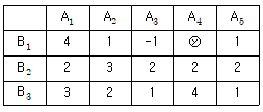
- 2
- 2.25
- 3.25
- 3
(정답률: 29%)
3. 직교배열표 L4(23)에서 괄호 안에 있는 2는 무엇을 뜻하는가?
- 인자의
- 열의 수
- 행의 수
- 수준수
(정답률: 68%)
4. 3인자 A(2수준), B(3수준), C(4수준) 삼원배치법의 실험계획에서 각각 2반복하여 실험하였다. 3인자 교호작용을 오차항에 풀림하였을 때 오차항의 자유도는?
- 16
- 24
- 30
- 32
(정답률: 48%)
5. 분산성분을 조사하기 위하여 A는 3일을 랜덤하게 선택한 것이고, B는 일별로 두 대의 트럭을 랜덤하게 선택한 것이고, C는 트럭 내에서 랜덤하게 두 삽을 취한 것이다. 각 삽에서 두 번에 걸쳐 소금의 염도를 측정하는 지분실험법을 실시하였다. 오차의 자유도는 얼마인가?
- 6
- 12
- 23
- 24
(정답률: 54%)
6. L27(313)형 직교배열표에서 인자 A를 5열 인자 B를 10열에 배치하였다면 교호작용 A×B가 배치되는 열 번호는?
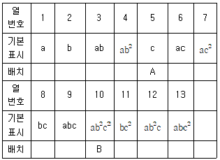
- 4, 10
- 4, 12
- 4, 13
- 4, 7
(정답률: 72%)
7. 직교분해에 대한 설명으로 가장 관계가 먼 내용은?
- 어떤 변동을 직교분해하면 어떤 대비의 변동이 큰 부분을 차지하고 있는가를 알 수 있다.
- 두 개 대비의 계수 곱의 합, 즉 C1C1+C2C2+ㆍㆍㆍ+CℓCℓ=0이면 두 개의 대비는 서로 직교한다.
- 직교 분해된 변동은 어느 것이나 자유도가 1이 된다.
- 어떤 요인의 수준수가 ℓ인 경우 이 요인의 변동을 직교분해하면 ℓ개의 직교하는 대비의 변동을 구해 낼 수 있다.
(정답률: 57%)
8. 실험계획에서 우연으로 볼 수 있는 산포와 교호작용의 효과를 분리할 필요가 있을 경우 실시하는 방법은?
- 교락
- 반복
- 별명
- 오차
(정답률: 35%)
9. 다음의 계수치 2원배치 실험에서 B인자 변동(SB)은 약 얼마인가?
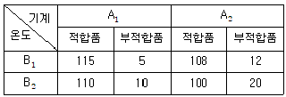
- 0.352
- 0.602
- 4.856
- 5.204
(정답률: 56%)
10. 다음 중 분산분석표로부터 모수인자 A,B에 대한 유의수준 10%에서의 가설 검정 결과로 올바른 것은? (단, F0.90(2,6)=3.46, F0.90(3,2)=9.16, F0.90(3,6)=3.29, F0.90(6,11)=2,39이다.)
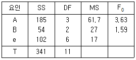
- F0.90(2,6)=3.46 = 3.46이므로 귀무가설
 을 기각할 수 없다.
을 기각할 수 없다. - F0.90(3,6)=3.29 = 3.29이므로 귀무가설
 을 기각한다.
을 기각한다. - F0.90(3,2)=9.16 = 9.16이므로 귀무가설
 을 기각한다.
을 기각한다. - F0.90(6,11)=2,39 = 2.39이므로 귀무가설
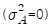
을 기각한다.
(정답률: 47%)
11. 반복이 없는 이원배치법에서 A는 모수인자이고, B는 변량인자인 경우, 다음 설명 중 틀린 것은?(오류 신고가 접수된 문제입니다. 반드시 정답과 해설을 확인하시기 바랍니다.)
- 난괴법의 형태이다.
- 이러한 경우에는 교호작용이 존재하지 않는다.
- 모수인자인 경우
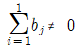
이고, 변량인자인 경우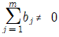
이다. - 모수인자인 경우 ai는
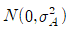
를 따른다.
(정답률: 30%)
12. 공장 내의 여러 분석자 중에서 랜덤하게 5명의 분석자를 선택하여 그들의 분석결과로서 공장 내 분석자의 측정산포를 고려하였다면 이 모형은?
- 모수모형
- 혼합모형
- 변량모형
- 구조모형
(정답률: 42%)
13. 2인자 A, B의 각 수준수는 ℓ,m이며, 반복 수 r회인 실험계획에서 A, B가 다 같이 모수모형이면 기대치 E(VA)를 구하는 식은?
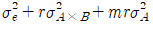
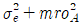
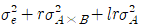
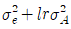
(정답률: 53%)
14. 반복수가 일정한 경우의 모수모형 일원배치에서 오차분산의 신뢰구간을 유의수준 α로 추정하는 식은?
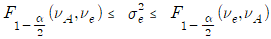
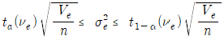
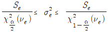
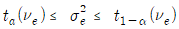
(정답률: 50%)
15. 반복수가 다른 1원배치법의 1데이터가 다음과 같을 때, 오차항의 변동(Se)은 약 얼마인가?
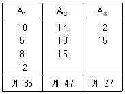
- 17.5
- 19.5
- 39.92
- 235.5
(정답률: 52%)
16. 3×3의 라틴 방격 실험에서 Tㆍ1ㆍ=17, Tㆍ2ㆍ=15, Tㆍ3ㆍ=14의 값을 얻었다면 SB의 값은 약 얼마인가?
- 1.56
- 1.89
- 235.11
- 282.23
(정답률: 55%)
17. 어떤 화학반응 실험에서 농도를 4수준으로 반복수가 일정하지 않은 실험을 하여 다음 표와 같은 결과를 얻었다. 분산분석결과 Se=2508.8이었다. μ(A4)과 μ(A2의 평균치 차를 α=0.⑤로 구간 추정하면 약 얼마인가? (단, t0.95(15)=1.753 t0.975(15)=2.131이다.)(오류 신고가 접수된 문제입니다. 반드시 정답과 해설을 확인하시기 바랍니다.)
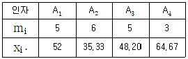
- 9.85 ≤ μ(A4)-μ(A2) ≤ 48.83
- -46.13 ≤ μ(A4)-μ(A2) ≤ 104.81
- 13.31 ≤ μ(A4)-μ(A2) ≤ 45.31
- -32.74 ≤ μ(A4)-μ(A2) ≤ 92.43
(정답률: 49%)
18. 5×5 라틴방격에서 인자 A, B, C를 각각 5수준으로 하여 실험 한 결과 SA=412.64, Se=23.92를 얻었다. 인자 A의 분산비 F0는 약 얼마인가?
- 1.99
- 3.88
- 51.75
- 103.16
(정답률: 57%)
19. 중 회귀 분석 정의로서 가장 올바른 것은?
- 독립변수 1개, 종속변수 1개로 이들 사이에 1차함수를 가정하는 경우
- 독립변수 2개 이상, 종속변수 1개로 이들 사이에 1차 함수를 가정하는 경우
- 독립변수 2개 이상, 종속변수 1개로 이들 사이에 2차 이상의 함수를 가정하는 경우
- 독립변수 1개, 종속변수 1개로 이들 사이에 2차 이상의 함수를 가정하는 경우
(정답률: 40%)
20. 망대특성 실험의 경우 특성치가 다음과 같을 때 SN비(signal-to-noise ratio)는 약 몇 db인가?
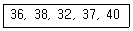
- -31.20
- -21.81
- 28.15
- 31.20
(정답률: 60%)
2과목: 통계적품질관리
21. 로트 평균값 보증에 대한 검사특성곡선에 관한 서술로 옳지 않은 것은?
- 종축의 눈금은 로트의 합격확률이다.
- 횡축의 눈금은 로트의 평균값이다.
- 망소특성에서 합격확률 L(m)을 구하기 위한 값을 구하기 위한 식은
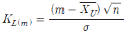
이다. - 망소특성에서 KL(m)의 값이 양의 값으로 나타나는 경우 로트의 평균 m이
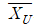
보다 큰 경우로 합격확률은 최소한 50%보다 크다.
(정답률: 39%)
22. A회사와 B회사 제품은 로트로부터 각각 12개 및 10개를 제품을 추출하여 순도를 측정한 결과,
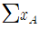
=1145.7,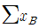
=947.2, 일 때 두 회사 제품의 모평균의 차에 대한 신뢰구간은 약 얼마인가? (단, σA=0.3, σB=0.2이며, 신뢰도는 95%로 한다.)- 0.54~0.79
- 0.54~0.97
- 0.66~0.79
- 0.66~0.97
(정답률: 65%)
23. 반응온도(x)와 수율(y)과의 관계를 조사한 결과 Sxx=147.6, Syy=56.7, Sxy=80.4이었다. 회귀로 부터의 변동(Sy/x)은 약 얼마인가?(오류 신고가 접수된 문제입니다. 반드시 정답과 해설을 확인하시기 바랍니다.)
- 10.354
- 13.1⑤
- 43.795
- 56.942
(정답률: 38%)
24. 전수검사가 불가능하여 반드시 샘플링검사를 하여야 하는 경우는?
- 전기제품의 출력전압의 측정
- 주물제품의 내경가공에서 내경의 측정
- 전구의 수입검사에서 전구의 점등시험
- 전구의 수입검사에서 전구의 평균수면 추정
(정답률: 53%)
25. 2개의 변량 x, y의 기대치는 각각 μx, μy이며, 분산은 모두 σ2이다. 이 때
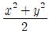
의 기대치는?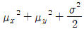
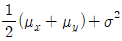
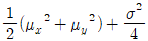
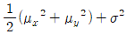
(정답률: 52%)
26. 두 모집단에서 각각 η1= 5, η2= 6으로 추출하여 어떤 특정치를 측정한 결과 [데이터]와 같았다. 모분산비의 검정을 위한 검정통계량은 약 얼마인가?
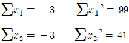
- 2.08
- 2.80
- 3.08
- 3.80
(정답률: 46%)
27. 남자 아이와 여자 아이가 태어나는 확률은 같다고 알려졌다. 이를 검정하는 방법으로 옳지 않은 것은?
- 태어난 아이들의 성별을 조사하여 적합도 검정을 실시한다.
- 적합도 검정시 남자와 여자 아이들의 기대도수는 같다.
- 자유도는 전체 조사한 아이들의 수에서 1를 뺀 수 이다.
- 귀무가설은 남자 아이와 여자 아이가 태어날 확률을 각각 0.5로 둔다.
(정답률: 65%)
28. 다음 중 공정평균이 10이고 모표준편차가 1인 공정을  관리도로 평균치 변화를 관리할 때 검출력이 가장 크게 나타나는 경우는?
관리도로 평균치 변화를 관리할 때 검출력이 가장 크게 나타나는 경우는?
- 공정평균의 변화가 크고, 시료의 크기는 작다.
- 공정평균의 변화가 크고, 시료의 크기도 크다.
- 공정평균의 변화는 작고, 시료의 크기도 작다.
- 공정평균의 변화가 작고, 시료의 크기는 크다.
(정답률: 47%)
29. 계수치 샘플링 검사 절차-제1부:로트별 합격품질한계(AQL)지표형 샘플링검사 방안(KS Q ISO 2859-1 : 2010)의 보통 검사에서 생산자 위험에 대한 1회 샘플링 방식에 대한 값은 100 아이템당 부적합수 검사일 경우 어떤 분포에 기초하고 있는가?
- 이항분포
- 포아송분포
- 일양분포
- 초기하분포
(정답률: 61%)
30. 관리도의 관리한계선에 관한 설명으로 옳지 않은 것은?
 관리도에서 관리한계선으로 제품규격을 사용한다.
관리도에서 관리한계선으로 제품규격을 사용한다.- u 관리도에서 시료의 크기가 일정하지 않을 경우 관리한계선에 요철이 생긴다.
- 계수형 관리도에서 LCL이 음수인 경우, 일반적으로 '고려하지 않는다.'로 놓는다.
- Rs(이동범위) 관리도에서 사용되는 계수를 계수표에서 찾을 때 시료의 크기는 2로 간주한다.
(정답률: 35%)
31. 히스토그램을 작성하기 위하여 도수표를 만들려고 한다. 계급의 폭을 0.5로 잡고 제1계급의 중심치가 7.9일 때, 제3계급의 경계는 얼마인가?
- 8.15~8.65
- 8.65~9.15
- 9.15~9.65
- 9.65~10.15
(정답률: 60%)
32. 오차에 관한 설명으로 옳지 않은 것은?
- 측정값들의 산포의 크기가 정밀도이다.
- 측정값의 값이 작을수록 측정값의 정밀도는 나빠진다.
- 측정오차는 측정계기의 부정확, 측정자의 기술부족에서 오는 오차이다.
- 샘플링 오차는 시료를 랜덤하게 심플링하지 못함으로써 발생되는 오차이다.
(정답률: 50%)
33.
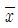
관리도에서 의 변동을
의 변동을 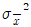
, 개개 데이터의 산포를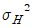
, 군간변동을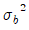
, 군내변동을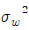
라 하면 이들 간의 관계를 가장 적절하게 표현한 식은?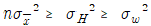
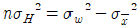
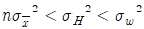
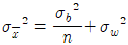
(정답률: 52%)
34. M 기계회사로부터 납품되고 있는 부품의 표준편차는 0.4%이었다. 이번에 납품된 로트의 평균치를 신뢰도 95%, 정도0.3%로 추정할 경우 샘플을 최소 몇 개를 취하여야 하는가?
- 5개
- 7개
- 9개
- 11개
(정답률: 50%)
35. 전구를 생산하고 있는 공장에서 전구의 수명에 대해 조치해 본 결과 수명은 개략적인 정규분포를 하며, 평균치는 400시간, 표준편차는 20시간이라고 밝혀졌다. 이 공장에서 생산되는 전구의 수명이 380~420시간이 되는 것은 전체의 약 몇 %인가?
- 68.26%
- 95.45%
- 97.58%
- 99.73%
(정답률: 45%)
36. [표]는 일정 단위당 확인한 시료군(k)에 대한 부적합수(c)자료이다. c 관리도의 중심선은 약 얼마인가?
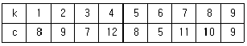
- 0.8
- 1.8
- 4.8
- 8.8
(정답률: 44%)
37. 계량치 축차 샘플링 검사방식(부적합률, 표준편차 기지) (KS Q ISO 8423:2009)에서 한쪽규격 SL이 주어지는 경우 합격판정치 A를 구하는 식으로 옳은 것은?
- A=hAσ+gonCUM
- A=-hRσ+gonCUM
- nt를 구하는 경우 At=gnt
- nt를 구하는 경우 At=gnt+1
(정답률: 61%)
38. 품질특성 X가 정규분포를 하며 그 평균치와 분산은 각각 100과 9이다. 이 공정에 대한  관리도를 그리고자 하는 데 시료군의 크기는 n=4로 한다.
관리도를 그리고자 하는 데 시료군의 크기는 n=4로 한다.
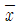
관리도의 관리상한선(UCL)은 약 얼마인가? (단, 관리한계선은 3σ 한계선을 사용한다.)- 102.3
- 104.5
- 106.8
- 113.5
(정답률: 47%)
39. 시료 부적합품률
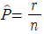
로부터 모부적합품률에 대해 정규분포 근사법을 이용하여 95%의 신뢰율로 양측 신뢰한계를 구할 때 사용하여야 할 식은? (단, n은 샘플의 크기, γ은 샘플 중 포함되어 있는 부적합품의 수이다.)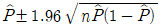
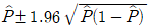
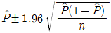
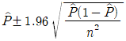
(정답률: 65%)
40. σ기지의 계량 규준형 1회 샘플링 검사(KS Q 1001:20⑤)에서 로트의 부적합품률을 보증하는 경우 n=26, k= 2.00이었다. 만약 이 결과를 이용하여 σ를 모르는 경우(σ 미지)의 n과 k를 구한다면 각각 약 얼마로 변하는가?
- n=26, k=2.00
- n=26, k=6.00
- n=78, k=2.00
- n=78, k=6.00
(정답률: 49%)
3과목: 생산시스템
41. P-Q 분석에서 품종과 설비배치유형을 올바르게 짝지어 놓은 것은?
- 소품종 대량생산 - 제품별배치
- 소품종 대량생산 - 공정별배치
- 다품종 소량생산 - 제품별배치
- 다품종 소량생산 - 흐름식배치
(정답률: 55%)
42. 애로공정에 대한 설명으로 가장 거리가 먼 것은?
- 상대적으로 더디게 진행되는 공정이다.
- 애로공정은 전체 공정의 능력과는 무관하다.
- 병목공정이라고도 한다.
- 애로공정이 있을 경우 전체 공정의 능력은 애로공정의 생산속도에 좌우된다.
(정답률: 70%)
43. 부품단가 1000원인 어떤 전자부품의 연간 소요량이 1000개, 주문비용이 매회 2000원, 연간 재고유지비가 부품단가의 10%일 때, 경제적 연간주문회수는 약 몇 회인가?
- 5
- 20
- 50
- 200
(정답률: 31%)
44. 생산계획 단계 중 총괄생산계획(APP)에 적합한 것은?
- 5년 이상의 장기계획
- 1년 이내의 중기계획
- 1일에서 몇 주 정도의 단기계획
- 1일의 초단기계획
(정답률: 54%)
45. 주문의 진척도와 작업장 혹은 설비의 능력을 고려하여 일간 처리할 작업을 배정하여 구체적인 작업일정이 수립되는 활동은?
- 공수계획
- 소일정계획
- 중일정계획
- 대일정계획
(정답률: 52%)
46. JIT를 적용하는 생산현장에서 부품의 수요율이 1분당 3개이고, 용기당 30개의 부품을 담을 수 있을 때 필요한 간판의 수와 최대재고수는? (단, 작업장의 리드타임은 100분이다.)
- 간판의 수 = 10 최대재고수 = 200
- 간판의 수 = 10 최대재고수 = 300
- 간판의 수 = 5 최대재고수 = 100
- 간판의 수 = 20 최대재고수 = 400
(정답률: 69%)
47. 신체사용에 관한 동작경제의 원칙으로 옳지 않은 것은?
- 양손은 동시에 시작하여 동시에 끝을 맺는다.
- 두 팔의 동작은 대칭이 되도록 한다.
- 직선 동작보다 연속적인 곡선 동작을 취하는 것이좋다.
- 개개의 동작거리를 최대로 한다.
(정답률: 67%)
48. 수행도 평가에 관한 설명으로 옳지 않은 것은?
- 작업자 평정계수라고도 한다.
- PTS 기법으로 표준시간을 산출할 때 필요하다.
- 작업의 정미시간을 구하는 데 사용된다.
- 작업의 표준페이스와 실제페이스의 비율을 의미한다.
(정답률: 35%)
49. 다음의 [데이터]를 이용하여 외경법에 의해 표준시간을 구하면 몇 분인가?
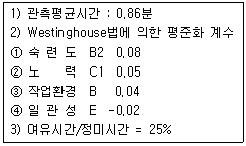
- 1.16353분
- 1.23625분
- 1.26471분
- 1.31867분
(정답률: 47%)
50. 작업우선순위 결정기법 중 긴급율 규칙에 대한 설명으로 옳지 않은 것은?
- CR = 잔여납기일수/잔여작업일수
- CR 값이 작을수록 작업의 우선순위를 빠르게 한 다.
- 긴급율 규칙은 설비이용율에 초점을 두고 개발한 방법이다.
- 긴급율 규칙은 주문생산시스템에서 주로 활용된다.
(정답률: 63%)
51. 다음 중 주기가 짧고 반복적인 작업에 적합한 작업측정기법으로 볼 수 없는 것은?
- 스톱워치법
- MTM법
- WF법
- 워크샘플링법
(정답률: 48%)
52. PERT/CPM 기법의 주공정에 관한 설명 중 옳지 않은 것은?
- PERT/CPM 네트워크에서 시간적으로 가장 긴 경로를 말한다.
- 주공정 활동이 지연되면 전체 프로젝트의 완료시간도 지연된다.
- 프로젝트 완료시간을 단축시키려면 주공정 활동의 활동시간을 단축시켜야 한다.
- PERT/CPM 네트워크에서 최장여유시간을 가진 단계를 연결하면 주공정이다.
(정답률: 44%)
53. 단속생산시스템 대비 연속생산시스템의 특징에 대한 설명으로 옳은 것은?
- 생산속도가 느리다.
- 공정중심의 생산형태이다.
- 주문위주의 단기적이고 불규칙적인 판매활동을 전개한다.
- 소품종 대량생산 시스템에 적합하다.
(정답률: 58%)
54. 각 제조부문의 감독자 밑에 보전업무를 담당하는 작업자를 배치하는 형태의 보전은?
- 집중보전
- 부문보전
- 지역보전
- 절충보전
(정답률: 63%)
55. 다음 설명 중 옳지 않은 것은?
- 테일러 시스템의 특징이 동시관리에 있다면, 포드시스템은 과업관리라 할 수 있다.
- 테일러는 고임금과 저노무비 실현을 위하여 과학적 관리법을 체계화하였다.
- 포드는 컨베이어에 의한 이동조립법을 실시하였다.
- 포드 시스템은 단순화, 표준화, 전문화는 오늘날대량생산의 일반원칙이 되었다.
(정답률: 59%)
56. 5S 중에서 부주의를 감소시키고, 결정사항을 준수하며, 작업방법을 올바르게 지키기 위해 다음 중 가장 필요한 것은?
- 정리
- 정돈
- 청소
- 습관화
(정답률: 60%)
57. 다음 중 수요예측기법으로 볼 수 없는 것은?
- 워크샘플링법
- 델파이법
- 시장조사법
- 이동평균법
(정답률: 63%)
58. 설비보전의 직접기능과 그 목적이 서로 다른 것은?
- 정비-열화의 방지
- 설계-열화의 제거
- 검사-열화의 측정
- 수리-열화의 회복
(정답률: 64%)
59. 발주점 방식과 MRP 방식을 비교한 것으로 틀린 것은?
- 발주점 방식은 수요패턴이 산발적이지만 MRP 방식은 연속적이다.
- 발주점 방식의 발주개념은 보충개념이나 MRP 방식의 경우 소요개념이다.
- 발주점 방식에서 발주량의 크기는 경제적주문량으로 일괄적이지만, MPR 방식에서는 순소요량으 로 임의적이다.
- 발주점 방식의 수요예측자료는 과거의 수요실적에 기반을 두지만, MRP 방식은 대일정계획에 의한 수요에 의존한다.
(정답률: 52%)
60. 동시동작 사이클분석표를 이용하는 기법은?
- Micro Motion Study
- Memo Motion Study
- Cycle Graph 분석
- Strobo 사진분석
(정답률: 45%)
4과목: 신뢰성관리
61. 고장률이 0.001/시간으로 동일한 부품 2개가 둘 중 어느 하나만 작동하면 기능을 발휘하도록 만들어진 시스템이 있다. 이 시스템의 평균수명 시간은?
- 500
- 1000
- 1500
- 2000
(정답률: 43%)
62. 신뢰도 배분에 대한 설명으로 옳지 않은 것은?
- 구성품이나 시스템의 설계단계 이후에 필요하다.
- 시스템 측면에서 요구되는 고장률의 중요성에 따라 신뢰도를 배분한다.
- 신뢰도를 배분하기 위해서는 시스템의 요구기능에 필요한 직렬결합 부품수, 시스템설계 목표치 등의 자료가 필요하다.
- 상위 시스템으로부터 시작하여 하위시스템으로 배 분한다.
(정답률: 52%)
63. 시험분석 및 시정조치(TAAF) 프로그램에 의하여 설계 및 제조상의 결함을 발견하고 이를 조치함으로써 시간이 지남에 따라 신뢰성 척도가 점진적으로 향상되는 과정에 대한 시험을 무엇이라 하는가?
- 신뢰성 성장시험
- 신뢰성 인증시험
- 환경 스트레스 스크리닝 시험
- 생산 신뢰성 수락시험
(정답률: 70%)
64. 욕조형 고장률 곡선에서 CFR에 대한 설명 중 옳은 것은?
- 유아기라고도 부르며 초기에 고장률이 감소하는 부분을 나타낸다.
- 청ㆍ장년기라고도 부르며 고장률이 비교적 낮고 일정한 부분을 나타낸다.
- 노년기라고도 하며 수명주기 후반에 가서 고장률이 증가하는 부분을 나타낸다.
- 높은 고장률이 발생하는 것을 방지하기 위해 번인, 또는 디버깅 등의 조치를 취한다.
(정답률: 57%)
65. n중 k시스템에서 각 부품이 신뢰도가 R(t)=e-λt로 주어졌을 때, 시스템의 평균수명은?
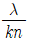
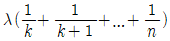
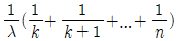
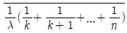
(정답률: 63%)
66. 와이블 분포에서 형상모수값이 2일 때 고장률에 대한 설명 중 옳은 것은?
- 일정하다.
- 증가한다.
- 감소한다.
- 증가하다 감소한다.
(정답률: 66%)
67. 다음 중 “일정한 시점 t까지의 잔존확률.”을 뜻하는 신뢰성 척도는 무엇인가? (단, R(t)는 신뢰도, F(t)는 불신뢰도, f(t)는 고장밀도함수, λ(t)는 고장률함수 이다.)
(정답률: 48%)
68. 계수 1회 샘플링 검사(MIL-STD-690B)에 의하여 총시험시간을 92000시간으로 하여 고장개수가 0개이면 로트를 합격시키고 싶다. 로트허용 고장률이 0.0001/시간인 로트가 합격될 확률은 약 몇 %인가?
- 0.01%
- 0.04%
- 1.00%
- 1.04%
(정답률: 48%)
69. 신뢰도가 0.8이 기기가 그림과 같이 결합되어 만들어진 시스템이 있다. 이 시스템의 신뢰도는 약 얼마인가?(오류 신고가 접수된 문제입니다. 반드시 정답과 해설을 확인하시기 바랍니다.)
- 0.01%
- 0.04%
- 1.00%
- 1.04%
(정답률: 20%)
70. 그림과 같은 FT도에서 정상사상의 고장확률은 약 얼마인가? (단, 기본사상 a, b, c의 고장확률은 각각 0.2, 0.3, 0.4 이다.)
- 0.0348
- 0.0600
- 0.4400
- 0.4848
(정답률: 55%)
71. 다음 중 제조단계에서 제품의 고유 신뢰성을 증대시키는 방법이 아닌 것은?
- 제조 공정의 자동화
- 신뢰성 시험의 자동화
- 제조 품질의 통계적 관리
- 부품과 제품의 번인 시험
(정답률: 36%)
72. 지수분포를 따르는 20개의 제품을 수리 또는 교환이 있는 수명시험을 행하여 10개가 고장 날 때 까지 계속하였다. 10번째 고장 나는 시간(tr)을 측정하였더니 90시간이었다. 100시간에서 신뢰도는 얼마인가?
(정답률: 55%)
73. 고장해석에 관한 설명으로 옳지 않은 것은?
- 고장해석 기법으로 FMEA와 FTA가 많이 활용된다.
- FMEA의 실시과정에서는 고장 메커니즘에 대한 많은 정보와 지식이 필요하다.
- FMEA는 시스템의 고장을 발생시키는 사상과 그 원인과의 관계를 관문이나 사상기호를 사용하여 나뭇가지 모양의 그림으로 설명한다.
- FTA는 정량적 분석방법이다.
(정답률: 64%)
74. 다음은 어떤 전자장치의 보전시간을 집계한 [표]이다. MTTR은 약 몇 시간인가?
- 1
- 2
- 3
- 4
(정답률: 73%)
75. 일반적인 신뢰도의 계산에 활용되는 와이블 분포에서의 평균수명 공식은 을 이용한다. 여기서 m은 무엇인가?
- 척도도수
- 위치모수
- 형상모수
- 누적모수
(정답률: 64%)
76. 평균수리시간이 2시간인 시스템의 가용도가 0.95이상이 되려면 이 시스템의 MTBF는 얼마 이상이어야 하는가? (단, 이 시스템의 수명분포는 지수분포를 따른다.)
- 35
- 36
- 37
- 38
(정답률: 72%)
77. 20개의 샘플에 대하여 10개가 고장날 때까지 수명시험을 500시간 실시하였고, 이 때 고장난 것은 새 것으로 교체하는 방식으로 실시되었다. 평균수명의 점추정치는?
- 500
- 760
- 1000
- 1500
(정답률: 60%)
78. 샘플수가 적은 경우 메디안 랭크법에 의해 신뢰도를 계산할 때, 다음 중 불신뢰도 F(t)를 옳게 표현한 것은? (단, n은 샘플수, i는 고장순번, ti는 i번째 고장발생시간이다.)
(정답률: 64%)
79. 고장률이 2/106 hr 인 트랜지스터 5개, 15/106 hr 인 저항 10개, 20/106 hr 인 축전기 2개, 5/106 hr 인 다이오드 5개가 직렬로 연결된 회로의 고장률은?
- 42/106 hr
- 100/106 hr
- 150/106 hr
- 225/106 hr
(정답률: 62%)
80. 기계 A의 고장률을 구하기 위해 기계를 작동시키면서 고장이 나는 경우 새로운 부품으로 교체를 하고 3000시간 고장 시험을 하였다. 그 결과 5회의 고장이 발생하였다. 기계 A의 고장률의 점추정치는 약 얼마인가? (단, 기계의 고장시간은 지수분포를 따른다.)
- 1.83×10-3
- 1.67×10-3
- 1.25×10-3
- 0.67×10-3
(정답률: 57%)
5과목: 품질경영
81. 품질코스트에서 시험, 검사기기의 품질수준을 유지하기 위한 정비 및 교정비용은 어느 코스트에 해당되는가?
- 평가코스트
- 예방코스트
- 관리코스트
- 실패코스트
(정답률: 39%)
82. 시간에 따라 변화되는 품질정보의 관리를 위해 활용되는 품질관리 수법은?
- 관리도
- 산점도
- 파레토도
- 히스토그램
(정답률: 46%)
83. 품질보증체계도에서 구비해야 할 사항으로 옳지 않은 것은?
- 정보의 피드백 경로
- 입하구분
- 클레임의 피드백
- 신뢰성시험
(정답률: 65%)
84. 소비자와 생산자간의 주요 관심사가 최근 점점 틈이 벌어지고 있어 제품설계의 최종적인 평가 요소인( )이 중요한 품질경영 요소가 되고 있다. ( )안에 해당되는 용어는?
- 사용품질
- 적합품질
- 검사품질
- 설계품질
(정답률: 45%)
85. 품질분임조 활동의 문제해결 과정에서 목표설정의 기준으로 옳지 않은 것은?
- 간단명료한 목표설정
- 분임조 수준에 맞는 목표설정
- 독창적이고 혁신적인 목표설정
- 구체적이고 달성 가능한 목표설정
(정답률: 65%)
86. 다음 내용은 산업표준화법의 목적을 설명한 것이다. ( )안에 들어가는 말을 순서대로 나열한 것 중 옳은 것은?
- 산업표준 - 효율 - 합리화
- 산업표준 - 납기 - 합리화
- 품질기준 - 효율 - 표준화
- 품질기준 - 납기 - 표준화
(정답률: 71%)
87. 품질관리 교육훈련의 효과적은 추진을 위한 사항으로 가장 거리가 먼 것은?
- 하위직부터 교육을 실시한다.
- QC의 기본적인 사고방식을 확실하게 이해하도록 한다.
- QC 7가지 도구를 확실하게 익혀 사용하도록 한다.
- TQM사무국에서 QC교육훈련 프로그램을 담당하여 추진한다.
(정답률: 67%)
88. 사내표준화의 요건이 아닌 것은?
- 실행 가능한 내용일 것
- 기록내용이 구체적ㆍ객관적일 것
- 직관적으로 보기 쉬운 표현을 할 것
- 장기적인 관점보다 단기적인 관점에서 추진
(정답률: 80%)
89. 모티베이션 운동은 그 추진 내용면에서 볼 때 동기부여형과 부적합예방형으로 나눌 수 있다. 부적합예방형 모티베이션 운동에 해당되지 않는 것은?
- 관리자 책임의 부적합품 또는 부적합이라는 관점에서 작업자의 개선 행위를 추구하고 있다.
- 관리자 책임의 부적합품 또는 부적합은 관리자에게 있다.
- 우수한 작업자의 기술을 습득하고 기술개선을 위한 교육훈련을 실시한다.
- 부적합품 또는 부적합을 탐색 추구하는데 있어서 작업자의 협조를 구한다.
(정답률: 47%)
90. 규격이 준수되고 있는가의 여부를 조사하는 감사 활동방향으로 옳지 않은 것은?
- 실시부문의 고민이나 애로사항을 듣는다.
- 규격을 준수하는 부문에 대해 사기를 북돋아 준다.
- 부정, 결점, 태만을 발견하는 데만 주력을 둔다.
- 현장관리자의 표준화에 대한 인식을 높이고 작업자에게 표준화의 필요성을 느끼도록 한다.
(정답률: 77%)
91. 사내규격을 유형별로 관리표준과 기술표준으로 구분할 경우 관리표준에 해당되는 것은?
- 설비관리규정
- 재료규격
- 성분분석 및 시험방법
- 제품규격
(정답률: 56%)
92. 품질관리 시스템을 효율적으로 운영관리하기 위해 제시되는 원칙에 대한 설명으로 옳지 않은 것은?
- 예방의 원칙 : 당초에 올바르게 만들어야 한다.
- 과학적 접근의 원칙 : PDCA의 관리과정을 거쳐서 행한다.
- 전원참가의 원칙 : 회의시에 전원이 꼭 참석해서 함께 토론해야 한다.
- 종합 조정의 원칙 : 각 부서의 최적이 전체의 최적이 안되는 경우가 발생하므로, 전체적으로 부서 의 역할을 조정한다.
(정답률: 56%)
93. 계측기 관리 업무 중 검사, 측정 및 시험장비 관리에서 고려할 사항으로 가장 거리가 먼 것은?
- 정확도 및 정밀도
- 시험장비의 검교정
- 사용 적합성
- 시험장비의 가격
(정답률: 79%)
94. 공정능력지수 CP1.0이라면 규격공차 T는?
- 3σ
- 4σ
- 5σ
- 6σ
(정답률: 52%)
95. 6σ 관리에서 현실적으로 공정의 중심을 ±1.5σ 만큼 이동되는 것을 허용한다면, 이 때의 6σ와 같은 품질수준은?
- 0.002ppm, Cpk = 2.0
- 0.002ppm, Cpk = 1.5
- 3.4ppm, Cpk = 1.5
- 3.4ppm, Cpk = 2.0
(정답률: 38%)
96. 품질경영시스템-요구사항(KS Q ISO 9001:2009)에서 8.5.2 시정조치의 요구사항에 해당되지 않는 것은?
- 부적합의 검토(고객불평 포함)
- 잠재적 부적합 및 그 원인 결정
- 부적합 원인의 결정
- 부적합이 재발하지 않음을 보장하기 위한 조치의 필요성에 대한 평가
(정답률: 49%)
97. 품질, 원가, 수량ㆍ납기와 같이 경영 기본요소별로 전사적 목표를 정하여 이를 효율적으로 달성하기 위해 각 부문의 업무분담은 적정화를 도모하고 동시에 부문 횡단적으로 제휴, 협력해서 행하는 활동은?
- 기능별관리
- 부문별관리
- 생산관리
- 설비관리
(정답률: 40%)
98. 시험장소의 표준상태(KS A 0006:2001)에 대한 설명으로 옳지 않은 것은?
- 표준상태의 온도는 시험의 목적에 따라서 20℃, 23℃ 또는 25℃로 한다.
- 표준상태의 습도는 상대습도 50% 또는 65%로 한다.
- 표준상태의 기압은 90kPa이상 110kPa 이하로 한다.
- 표준상태는 표준상태의 기압 하에서 표준상태의 온도 및 표준상태의 습도의 각 1개를 조합시킨 상 태로 한다.
(정답률: 70%)
99. 일반적으로 제조물 책임의 주체가 될 수 없는 대상은?
- 부품 제조업자
- 도매업자
- 용역제공자
- 제조물 이용자
(정답률: 58%)
100. 다음 2개의 축과 구멍에 대한 수치가 주어졌을 때, 억지끼워맞춤의 최대죔새와 최소죔새는 얼마인가?
- 최대죔새 : 0.075 , 최소죔새 : 0.025
- 최대죔새 : 0.011 , 최소죔새 : 0.030
- 최대죔새 : 0.⑤0 , 최소죔새 : 0.009
- 최대죔새 : 0.040 , 최소죔새 : 0.010
(정답률: 58%)